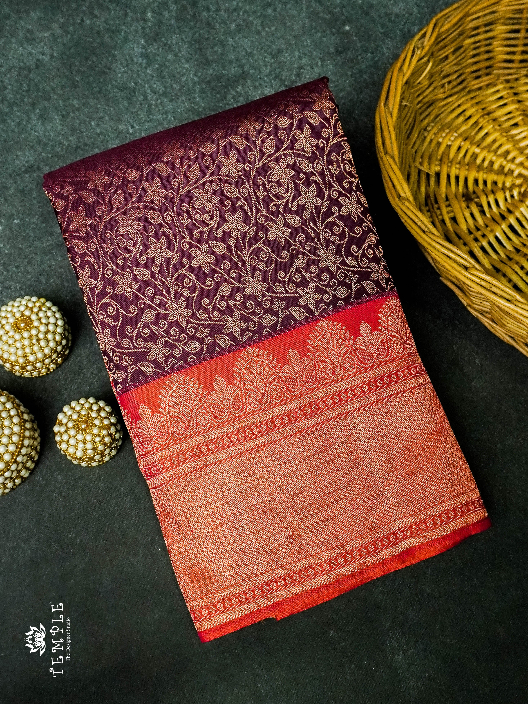
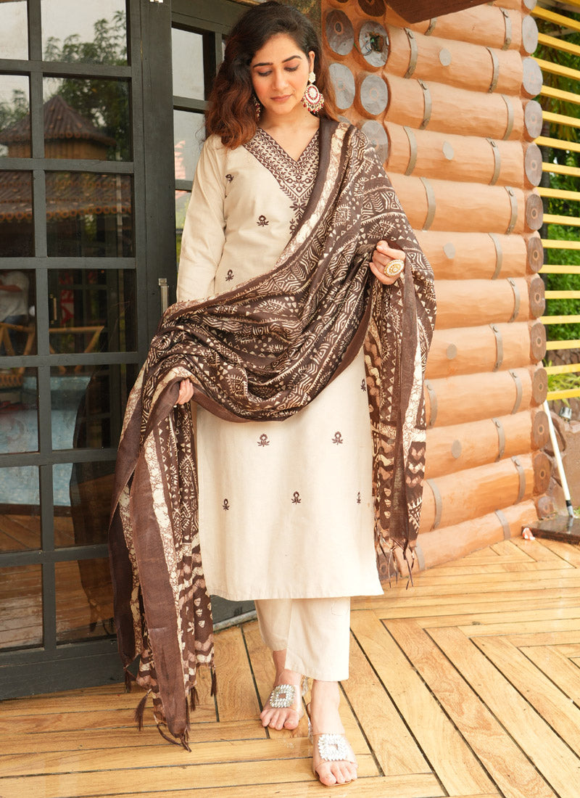
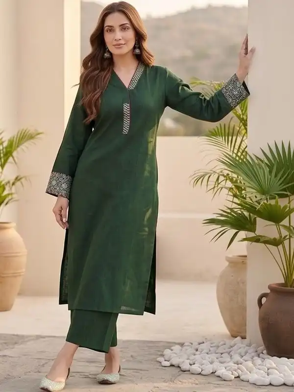
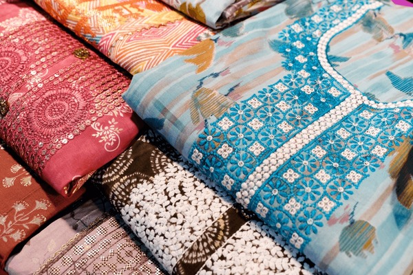
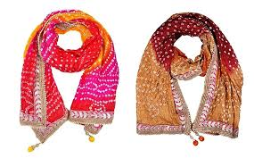

What We Offer
OUR COLLECTIONS
Hand-picked ethnic wear for every occasion — crafted with love, worn with pride

Sarees
Silk sarees, cotton sarees, casual and festive — a beautiful and trendy collection with stunning designs at very reasonable prices

Cotton Salwar Sets
Comfortable, breathable cotton salwar sets — perfect for daily wear, office wear & casual outings in Bengaluru weather

Kurtas & Kurtis
Elegant kurtas for all occasions — from simple daily wear to festive designs. Soft fabric, trendy cuts, great prices

Dress Materials
Premium quality unstitched dress materials & churidar sets — pick your fabric, stitch your style

Festive & Party Wear
Stunning ethnic outfits for weddings, festivals, and celebrations — look your best at every event

Accessories & Dupattas
Matching dupattas, stoles and ethnic accessories to complete your look perfectly